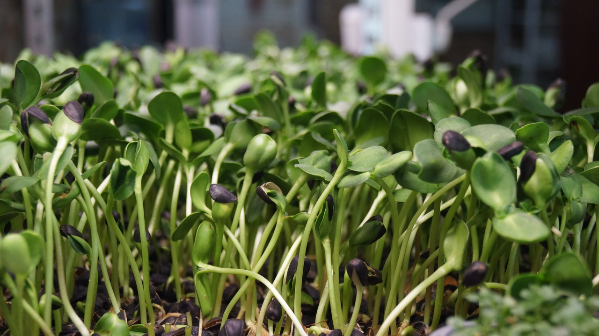

ПОДСОЛНЕЧНИК
Полезное воздействие проростков подсолнечника объясняется их богатым химическим составом. Прорастающее зерно содержит большое количество ферментов, минералов и других компонентов, например: ненасыщенные жирные кислоты (олеиновая, стеариновая, пальмитиновая); клетчатка; витамины Е, С, группы В; железо; магний; литий; хром; калий; селен.
Польза пророщенных семян подсолнечника для еды связана с тем, что в проростках присутствует большое количество ферментов и других биологически активных веществ. Со временем их концентрация снижается, поскольку весь запас активно расходуется на собственные нужды растения (формирование листьев, побегов, ускорение роста). Поэтому наиболее полезными считаются именно проростки подсолнечника и других культур.
Они улучшают обменные процессы и оказывают комплексное воздействие на организм: снижают уровень «плохого» холестерина (обозначается аббревиатурой ЛПНП, ЛНП или LDL); улучшают пищеварительные процессы (повышение моторики желудочно-кишечного тракта, очищение от продуктов полураспада, токсинов, обеспечение кислотно-щелочного баланса); оказывают омолаживающее влияние на кожу и внутренние органы благодаря высокому содержанию антиоксидантов, блокирующих свободные радикалы; улучшают внешний вид волос и ногтей; укрепляют кости и зубы; способствуют поддержанию иммунитета; восстанавливают зрение; нормализуют процессы кроветворения, помогают предотвратить развитие анемии; повышают работоспособность и концентрацию.